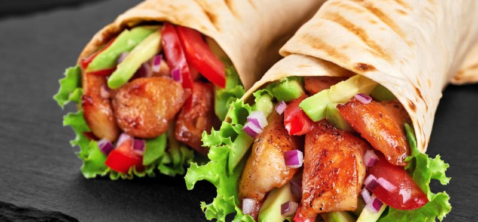

Shawarma Vegetariano

Ingredientes
- 1 colher de sopa de óleo vegetal
- 200 gramas de tiras de carne vegetal
- 1 cebola média cortada em fatias grossas
- 1/2 colher de chá de sal
- 1 pitada de pimenta-do-reino preta moída na hora
- 2 colheres de sopa de maionese
- 1 pão sírio
- 1 tomate pequeno cortado em fatias grossas
- 2 folhas de alface crespa
Preparo
- Em uma frigideira, coloque o óleo e leve ao fogo alto para aquecer. Junte as tiras de carne vegetal e a cebola e refogue, em fogo médio, por 5 minutos ou até dourar levemente.
- Tempere com sal e pimenta-do-reino. Retire do fogo e reserve.
- Passe a maionese em cada pão, disponha as tiras de carne refogadas, as rodelas de tomate e as folhas de alface-crespa.
- Enrole e sirva em seguida.
Return to main page